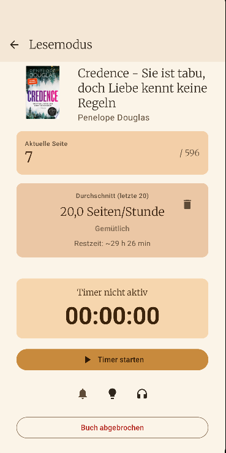
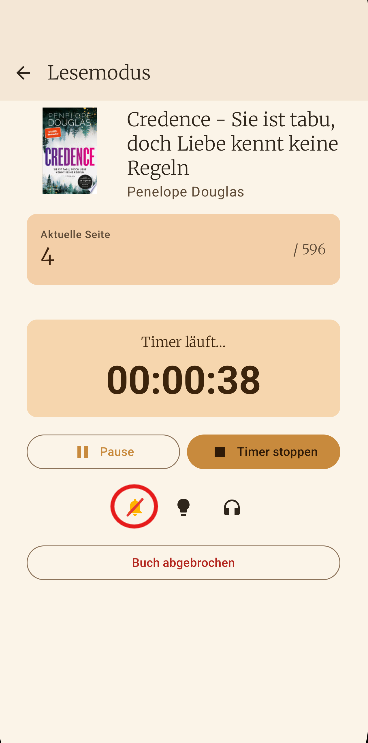
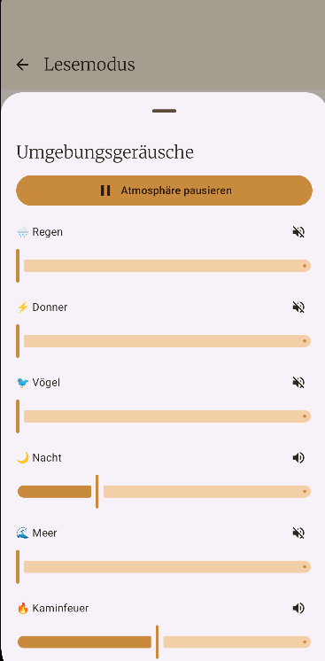
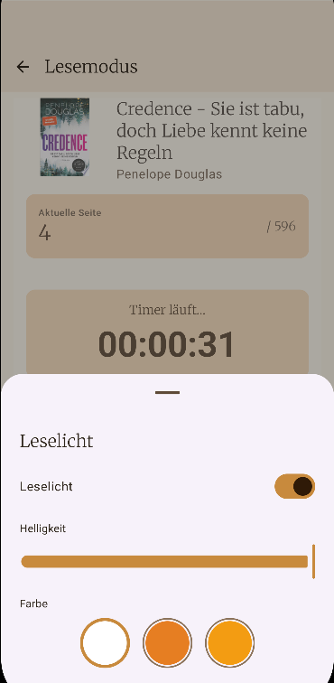
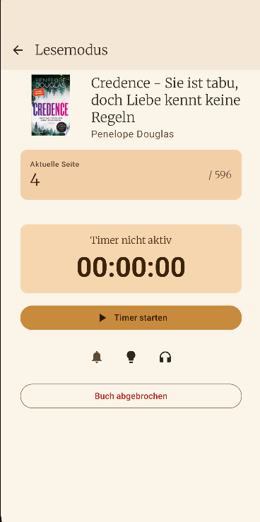

ISBN Scanner
Capture books in seconds, including an intelligent lookup chain from local matches to the community cache and external sources.
Cozy Reading Companion
Your digital bookshelf and reading companion – calm, clear, and free from distractions.
Keep track of your physical books and dive into every reading session with focus. Bookielist is a collection manager and reading companion, not an e-reader. Manage your shelf, share books with friends, keep a wishlist, and buy directly from Thalia. All features like bulk scan and ISBN text recognition are included completely free. Currently available for Android only, not for iOS. No forced account. No tracking. No subscription trap.
Features
Everything you need to capture, organize, and rediscover your physical books.
Capture books in seconds, including an intelligent lookup chain from local matches to the community cache and external sources.
Load metadata from the cloud, Google Books, or Open Library when no barcode is available.
Enter ISBN, title, author, and cover manually, then enrich the record later if needed.
Track unread, started, finished, or stopped separately for owned books and wishlist items.
Keep your actual collection separate from your wishlist while still managing everything in one app.
Bookielist recognizes book series automatically, shows volume numbers, and gives you a quick series view.
If no online cover is available, you can use your own photo as a cover. Those images stay exclusively on your device.
Anonymous book metadata and optionally shared series details help deliver faster matches for the community.
Choose from multiple mood modes to match the atmosphere of your current reading phase.
Export your library as JSON and restore it in a controlled way on a new device.
Why Bookielist
Bookielist is meant to feel like a personal shelf manager for your physical books, not like a service that wants to become your reader, your profile, or your subscription.
Bookielist is not trying to replace your reading device. It is built to organize, surface, and manage your shelf instead of pushing you into a closed reading ecosystem.
Your collection, reading status, custom cover photos, and backups stay under your control on the device instead of being tied to a user account or mandatory cloud service.
No in-app tracking, no profiling, and no ad IDs. To improve matches, Bookielist only shares general book metadata and optional series details, never personal reading data.
Monetization
Your bookshelf is completely free and unlimited to use. All features like bulk scan and ISBN text recognition are included for free. No subscription, no ads, no hidden costs.
Flow
Special feature
Pick a book from your shelf and start the reading session. Reading Mode turns your smartphone into a dedicated reading station – with everything you need to lose yourself in a book, and everything that distracts you kept outside.

Start the timer as a classic stopwatch or set a time limit in countdown mode. When the time runs out, the timer seamlessly switches to stopwatch. You receive a high-priority wake-up call notification with vibration.

A tap on the bell activates Android Do Not Disturb mode. Notifications from social media, messengers, and other apps are blocked while Bookielist's own notifications still come through.

Immerse yourself with ambient background sounds: rain, sea, fireplace, night, birds and thunder. Each sound can be adjusted individually in volume.

Control screen brightness directly from the app and choose color filters like warm amber or cool white for cozy reading evenings.

Bookielist tracks your reading speed, shows your ranking from Cozy to Divine, and estimates remaining time. Pick a book from your library, update your page, and your reading status adjusts automatically.
Screenshots


The app stores personal library data and custom cover photos locally on your device. Details about the community cache, optionally shared series details, API requests, and your rights are available in the separate Bookielist Privacy Policy.
Go to Privacy Policy